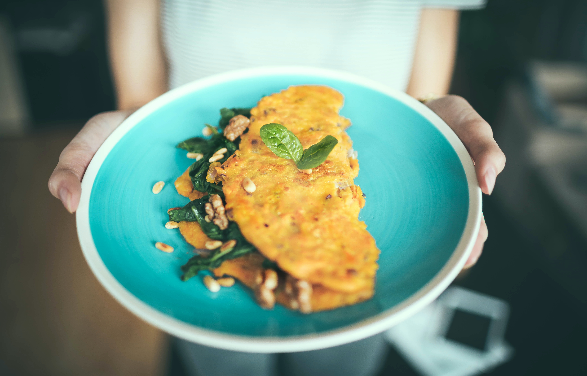

RECETAS

Pancakes de avena
ingredientes
- Dos huevos
- Cuatro cucharadas de avena
- Una cucharada de coco rallado
- Una cucharada de miel
- Pizca de canela (opcional)
- Frutas o toppings a gusto
Preparacion
- Batir los dos huevos
- Incorporar la avena, con el coco y la canela
- Agregar los endulzantes
- Cocinar 2 minutos por lado en sarten bien caliente
- Enplatar y compañar con frutas, pasta de mani, mermelada o el topping de tu gusto

tacos
ingredientes
- Una cebolla
- Un pimiento rojo
- Un piniento verde
- Una Zanahoria
- 500gr de carne cortada en trozos
- Sal
- Condimentos a gusto
- Rapititas o fjitas
preparacion
- Cortar todas las verduras en tiritas y saltear en una olla con un chorrito de aceite caliente
- En una olla o sarten distinta, condimentar la carne y cocinarla
- Una vez que las verduras estan doradas, agregarle sal y condimentos a gusto con un chorrito de agua y cocinar durante 15min
- Cuando tengamos la carne lista la agregamos a la mezcla de verduras y cocinamos junto unos 3 minutos
- Por ultimo alentar las Rapiditas o Fajitas y servir
Podes agregarle las verduras y toppings que mas te gusten como pure de palta, salsa de soja, etc

OMELETTE
ingredientes
- Dos huevos
- Sal
- Condimentos
- Queso
- Jamon
preparacion
- Calentar una sarten con aceite a fuego fuerte
- Batir los dos huevos con la sal y los condimentos
- Poner los huevos btidos en la Sarten y bajar el fuego a minimo
- Agregar el Jamon, el queso y cerrar a la mitad nuestra mezcla con ayuda de una espatula
- Apagar el fuego y dejar que el quesose derrita
LISTO!